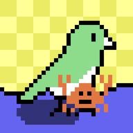

Snatch pulses
One snatch, one pulse. If several happen between polls, every pulse is queued in order.

A small, self-hosted Linux service that pulses your Philips Hue light whenever Pot Potato is snatched.
One snatch, one pulse. If several happen between polls, every pulse is queued in order.
The light always returns to its former on/off state, brightness, and colour.
Your Hue bridge stays on your home network. No cloud bridge or inbound access required.
Linux + systemd
git clone git@github.com:FancyBudgie/potato-hue.git
cd potato-hueThis builds the tiny Rust binary and creates a protected config file at /etc/potato-hue/.env.
make service-installsudoedit /etc/potato-hue/.env
HUE_BRIDGE_IP=192.168.1.50
HUE_APP_KEY=
HUE_LIGHT_ID=Press the physical Hue bridge button, then run the following. Copy the printed key and your chosen light ID into the config file.
make service-authorize
make service-list-lights
sudoedit /etc/potato-hue/.envmake service-test-pulse
sudo systemctl enable --now potato-hue
make service-logsGood to know: the watcher starts from the current holder count and waits for the next snatch. By default it checks Pot Potato every 60 seconds.
Make it yours
Edit /etc/potato-hue/.env, then restart the service.
POTATO_POLL_SECONDS=60
PULSE_ON_MS=450
PULSE_GAP_MS=180
PULSE_MAX_BRIGHTNESS=70
# White / temperature lights
PULSE_TEMPERATURE_K=2700
# RGB lights (use instead of temperature)
# PULSE_COLOR=#FF9A20Temperature and RGB colour are mutually exclusive. Leave both unset to use the light’s existing colour.
make service-restartOptional
Watch a Chia address. While it holds the potato, its light gets hotter as the deadline approaches.
WATCHED_ADDRESS=xch1youraddress...
HOLDER_START_BRIGHTNESS=10
HOLDER_END_BRIGHTNESS=100
# RGB: brown → red
HOLDER_START_COLOR=#8B4513
HOLDER_END_COLOR=#FF0000
# White: warm → cool
HOLDER_START_TEMPERATURE_K=2200
HOLDER_END_TEMPERATURE_K=6500RGB lights get the brown-to-red gradient. White-temperature lights move from warm to cool. Brightness-only lights still intensify.
Everyday controls
make service-status see if it is running
make service-logs follow the live log
make service-update build + redeploy an update
make service-remove remove service, keep config